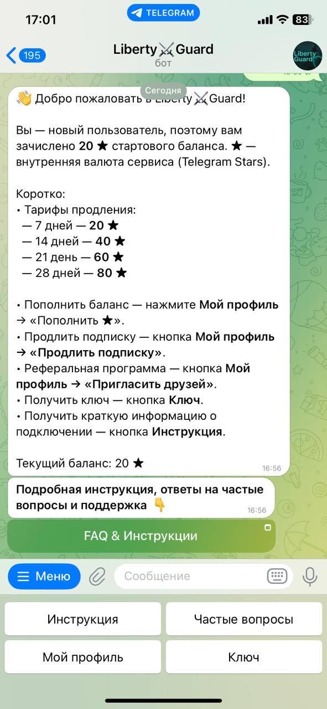

На этой странице вы найдёте пошаговую инструкцию по использованию нашего Telegram-бота. Следуя простым рекомендациям, вы сможете быстро подключиться, управлять подпиской и безопасно использовать все функции VPN.
1. Начало работы
2. Основные команды
Бот предоставляет удобный набор команд, с помощью которых вы сможете быстро управлять своим VPN и получать нужную информацию. Каждая команда выполняет определённую задачу, позволяя экономить время и не искать информацию вручную.
/start – перезапуск бота. Используйте эту команду, если хотите вернуться к началу взаимодействия с ботом или обновить состояние сессии.
/instruction – инструкция по использованию. Команда выводит подробное руководство по установке и настройке VPN на вашем устройстве.
/support – частые вопросы. Здесь вы найдете ответы на самые популярные вопросы пользователей и советы по решению возможных проблем.
/status – информация о вашем профиле. С помощью этой команды можно быстро проверить статус подписки, баланс и другую персональную информацию.
</key – информация о ключе доступа. Команда показывает детали вашего ключа VPN и позволяет убедиться, что он активен и привязан к вашим устройствам./p>
Эти команды созданы для того, чтобы максимально упростить работу с VPN и сделать использование сервиса безопасным и удобным. Просто отправляйте команды и получайте нужную информацию моментально!
3. Оплата
- Не поддерживается версия устройства или приложения.
- Проблема с подпиской — проверьте срок действия.